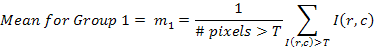
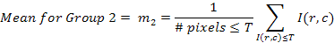

auto_threshold_segment-a segmentation- automatic thresholding filter.
#include <CVIPtoolkit.h> #include <CVIPconvert.h> #include <CVIPdef.h> #include <CVIPimage.h> #include <CVIPspfltr.h> Image auto_threshold_segment(Image* inputImage,float limit); <inputImage> - pointer to an Image <Limit>- limiting value to find threshold value
$CVIPtoolsHOME\CVIPC\SEGMENTATION\auto_theshold_segment.c
Auto
threshold is a method to find the threshold automatically. This is an iterative
process, easily implemented via computer program. Auto threshold is also
called as Isodata or K-means algorithm.


Mean1
is the pixels greater than Told
Mean2
is the pixels less than Told
average of the two
mean values: Tnew = (m1 + m2)
/2
Told -Tnew < limit
then Tnew is the threshold value otherwise
replace old threshold with new and find the mean values.
None
Pointer to the processed image
History information recorded: None
#include <CVIPtoolkit.h> #include <CVIPconvert.h> #include <CVIPdef.h> #include <CVIPimage.h> #include <CVIPsegment.h> void main() { Image *cvipImage; IMAGE_FORMAT format; char *inputfile,*outputfile; (void) setDisplay_Image(VIEWER, "Default"); print_CVIP("\n\t\tEnter the Input File Name: "); inputfile =(char *) getString_CVIP(); format = getFormat_CVIP(inputfile); cvipImage = read_Image(inputfile,1); view_Image(cvipImage, inputfile); free(inputfile); /* the following call performs filter operation with limit value of 10*/ cvipImage = auto_threshold_segment(cvipImage,10.0f); print_CVIP("\n\t\tEnter the Output File Name: "); outputfile = getString_CVIP(); view_Image(cvipImage,outputfile); write_Image(cvipImage,outputfile,CVIP_NO,CVIP_NO,format,1); free(outputfile); }
SEGMENTATION library
Copyright (C) 2010 SIUE - by Scott Umbaugh and Mounika Mamidi.